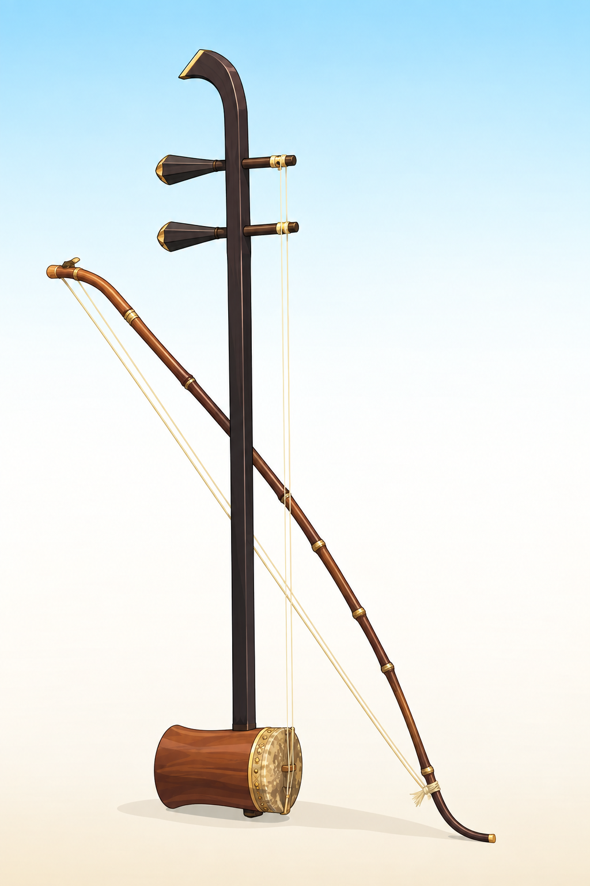
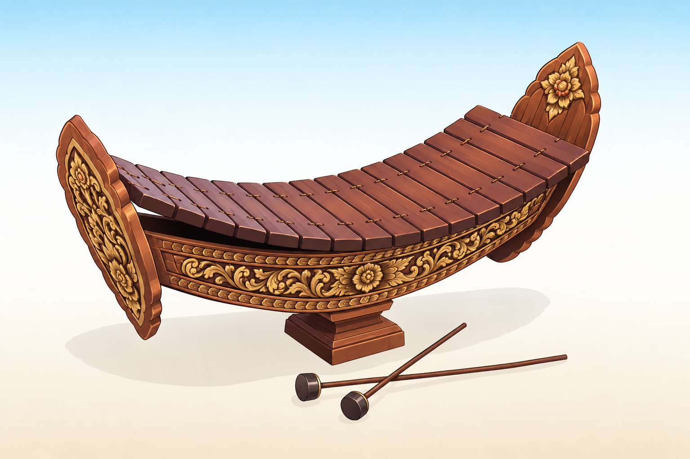
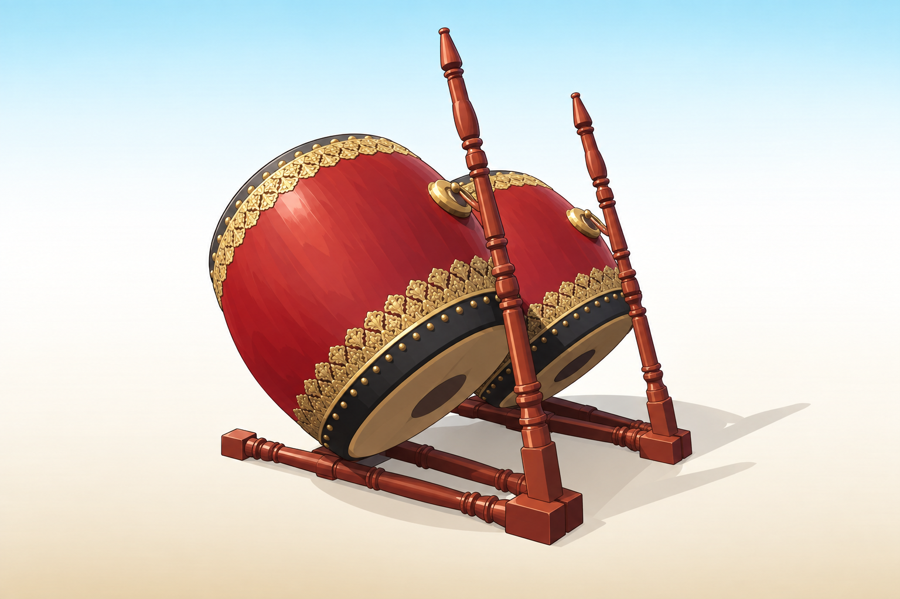
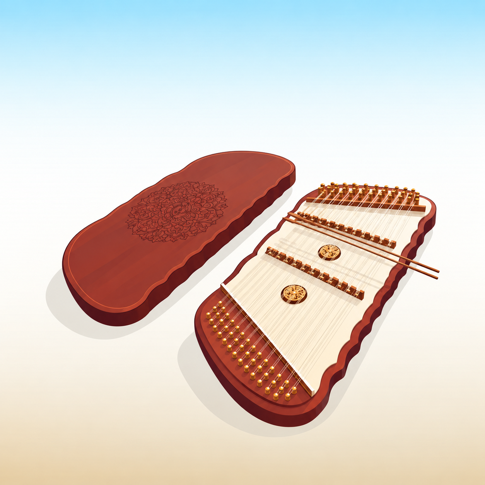
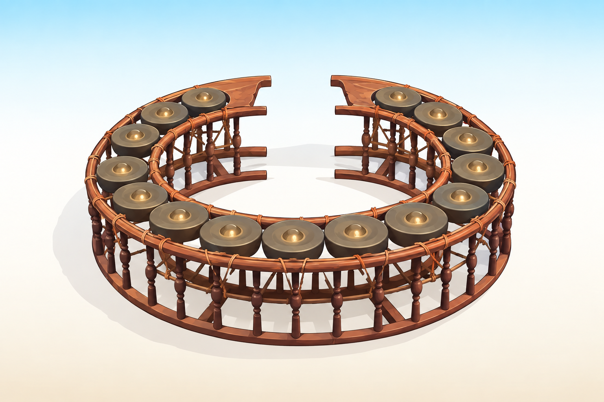
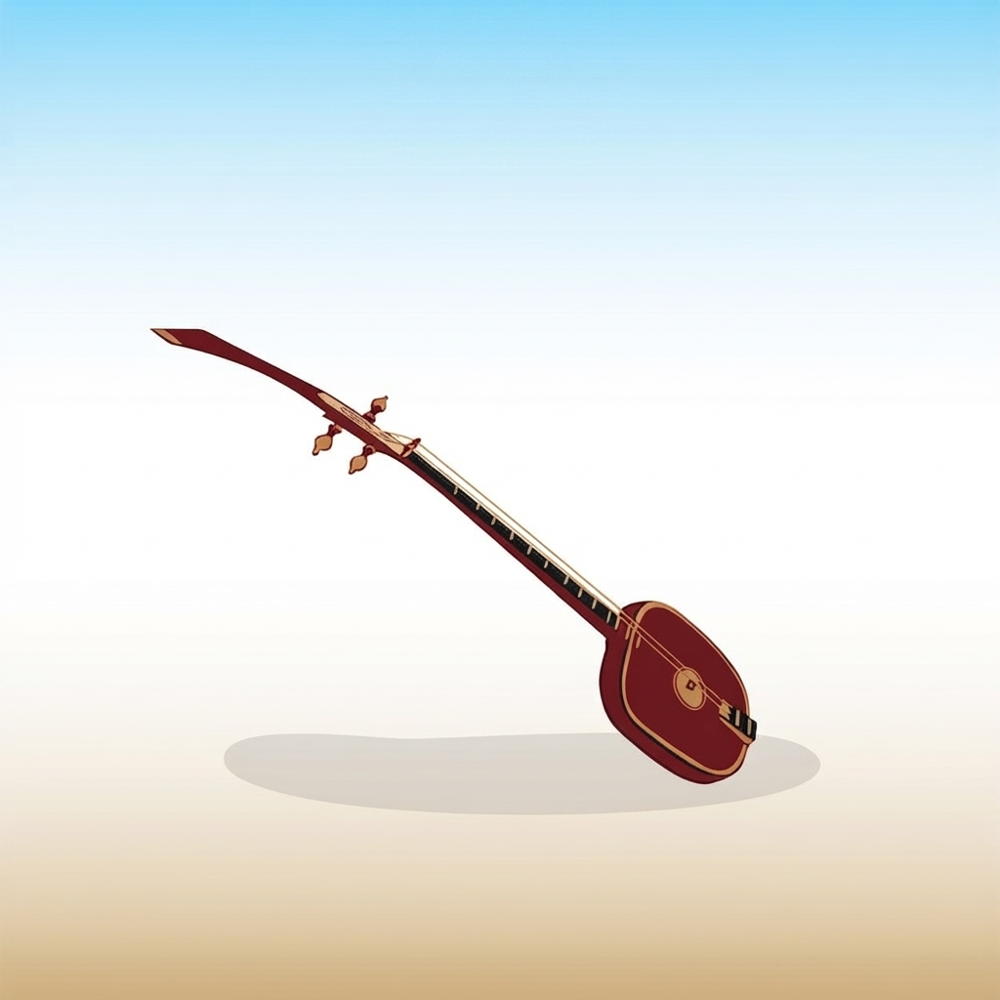
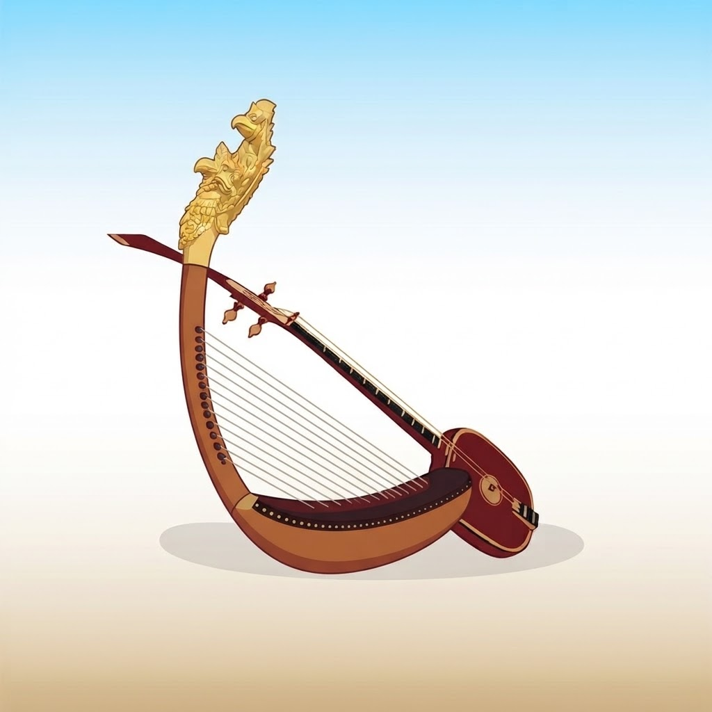

ត្រសៅ
Tro Sau — Two-String Fiddle
A vertically held two-string fiddle with a coconut-shell resonator covered in goat skin. Used in folk and classical ensembles for expressive melodies.
Each piece is built by artisans in Cambodia using time-honoured methods — from hardwood carving to hand-tuned bronze. Browse the current collection below.

A vertically held two-string fiddle with a coconut-shell resonator covered in goat skin. Used in folk and classical ensembles for expressive melodies.

A high-pitched bamboo and gong xylophone, the lead melodic instrument of the pinpeat orchestra. Hand-carved bars with gilded bronze keys.

A deep, resonant barrel drum played with hands, providing the rhythmic foundation of classical Khmer music. Made from carved hardwood and cowhide.

A trapezoidal box strung with metal courses and struck with light bamboo hammers, prized for its bright, cascading tone in modern Khmer ensembles.

A circular rack of 12 to 14 tuned gongs, struck with padded mallets. A central part of the pinpeat ensemble, providing shimmering harmonic accompaniment.

A two-string plucked lute with a long fretted neck, traditionally used to accompany sung poetry and storytelling. Carved from a single piece of hardwood.
A conical hardwood oboe with a piercing, nasal tone that carries the melodic line of the pinpeat ensemble over the gongs and drums.

An ancient arched harp with a boat-shaped resonator, revived from Angkorian bas-reliefs. A rare centrepiece for collectors and classical ensembles.